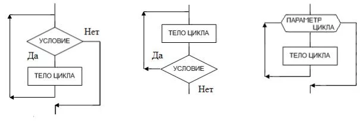

Дисциплина: Основы программирования на C++
Продолжительность: 2 × 45 минут
Главная идея лекции:
Цикл позволяет выполнить один и тот же фрагмент программы несколько раз, пока выполняется некоторое условие.
Сформировать понимание цикла как алгоритмической конструкции: условие → тело → изменение состояния → повторная проверка.
После занятия студент должен:
while, do while и for;break и continue;7. Циклы и управление их выполнением
Допустим, необходимо вывести числа от 1 до 5.
Можно написать:
std::cout << 1 << '\n';
std::cout << 2 << '\n';
std::cout << 3 << '\n';
std::cout << 4 << '\n';
std::cout << 5 << '\n';
Работает.
Но что если нужно вывести числа от 1 до 1 000 000?
Очевидно, такой подход не подходит.
Нам нужно описать правило, а не перечислить миллион команд.
Например:
Начать с 1 и каждый раз увеличивать число на 1, пока оно не станет больше 1 000 000.
Вот это и есть идея цикла.
Любой цикл можно представить в виде одной из трех схем:

Например:
int i{1};
while (i <= 5) {
std::cout << i << '\n';
++i;
}
int i{1};
i равно 1.
i <= 5
Истина.
std::cout << i << '\n';
++i;
Теперь i == 2.
Снова проверяем условие.
И так далее.
whileОбщий вид:
while (условие) {
// тело цикла
}
Смысл:
Пока условие истинно, выполнять тело цикла.
whileУсловие проверяется до выполнения тела.
Поэтому тело может не выполниться ни одного раза.
int x{10};
while (x < 5){
std::cout << x << '\n';
}
Ничего не произойдет.
Чтобы цикл когда-нибудь закончился, его состояние должно изменяться так, чтобы условие в какой-то момент стало ложным.
Например:
int i{1};
while (i <= 10) {
std::cout << i << '\n';
++i;
}
Здесь состояние — i.
Мы изменяем его:
++i;
int i{10};
while (i > 0) {
std::cout << i << '\n';
++i;
}
i увеличивается, хотя для завершения цикла его нужно уменьшать.
А здесь:
int i{1};
while (i <= 10) {
std::cout << i << '\n';
}
состояние не меняется.
Получаем бесконечный цикл.
Бесконечный цикл — это цикл, условие которого никогда не становится ложным.
Например:
while (true) {
// ...
}
Это намеренно бесконечный цикл.
do whileИногда необходимо, чтобы тело цикла выполнилось как минимум один раз.
Тогда используется:
do {
// тело
} while (условие);
Например:
int x{0};
do {
std::cout << "Введите положительное число: ";
std::cin >> x;
} while (x > 0);
Здесь проверка выполняется после тела.
while
проверка
↓
тело
↓
проверка
do while
тело
↓
проверка
↓
тело
Поэтому:
int x{10};
while (x < 5) {
std::cout << "while\n";
}
ничего не выведет,
a:
int x{10};
do {
std::cout << "do while\n";
} while (x < 5);
выведет:
do while
ровно один раз.
do whileНапример, при организации меню
...
int choice{};
do {
// показать меню
// получить choice
} while (choice != 0);
Пользователь должен увидеть меню хотя бы один раз.
Однако
Профессиональные разработчики и стандарты кодирования (например, Google C++ Style Guide) рекомендуют избегатьdo-whileпо нескольким веским причинам:
1. Логическая инверсия кода В цикле for или while условие находится сверху. Вы сразу видите, при каком условии выполнится код.В do-while тело цикла выполняется вслепую, а условие проверки спрятано в самом низу. Если тело цикла длинное (больше 10–15 строк), человеку приходится прокручивать код вниз, чтобы понять, почему этот цикл вообще крутится. Это снижает читаемость.
2. Опасность «первой бесплатной итерации» Главная фишка do-while — он всегда выполняется минимум один раз, даже если условие изначально ложно. В современном программировании это частый источник багов: Если перед циклом данные оказались некорректными (например, файл не открылся), do-while всё равно пойдет выполнять код и вызовет критическую ошибку (Crash). Обычный while сначала проверит и просто пропустит цикл.
3. Проблемы с областью видимости (Scope) Переменные, объявленные внутри тела do-while, не видны в условии проверки.
do {
int x{3};
} while (x != 0); // ОШИБКА: компилятор не знает, что такое x!
Используйте код с осторожностью. Чтобы код заработал, переменную приходится выносить наверх, за пределы цикла.
while
может выполнить тело 0 или больше раз.
do while
выполняет тело 1 или больше раз.
forfor особенно удобен, когда структура цикла естественно выражается через начальное состояние, условие продолжения и изменение состояния — например, при переборе диапазона или использовании счётчика.
Например:
вывести числа от 1 до 10.
for (int i{1}; i <= 10; ++i) {
std::cout << i << '\n';
}
Общий вид:
for (инициализация; условие; изменение) {
// тело
}
Три части:
for (int i{1}; i <= 10; ++i)
int i{1};
Выполняется один раз.
i <= 10 ;
Проверяется перед каждой итерацией.
++i
Выполняется после тела.
Итерация — одно выполнение тела цикла.
Например:
for (int i{1}; i <= 3; ++i) {
std::cout << "i = " << i << '\n';
}
имеет три итерации:
i = 1
i = 2
i = 3
После i == 4 условие:
i <= 3
становится ложным.
Цикл заканчивается.
break
break немедленно завершает цикл.
for (int i{0}; i < 10; ++i) {
if (i == 5) {
break;
}
std::cout << i << '\n';
}
Вывод:
0
1
2
3
4
Когда i == 5, выполняется break.
Программа выходит из цикла.
Важно
break завершает только ближайший цикл.
Если есть вложенные циклы:
for (...) {
for (...) {
break;
}
}
будет завершен внутренний цикл.
continue
continue не завершает цикл.
Он говорит:
Пропустить оставшуюся часть текущей итерации и перейти к следующей.
Например:
for (int i{1}; i <= 10; ++i) {
if (i % 2 == 0) {
continue;
}
std::cout << i << '\n';
}
Вывод:
1
3
5
7
9
break и continue
break
↓
выйти из цикла
continue
↓
перейти к следующей итерации
for и while
Эти циклы могут выполнять одну и ту же задачу.
Например:
int i{1};
while (i <= 5) {
std::cout << i << '\n';
++i;
}
и:
for (int i{1}; i <= 5; ++i) {
std::cout << i << '\n';
}
Результат одинаковый.
Разница в том, что for компактно объединяет:
Какой цикл использовать?
for - Когда есть понятный счетчик или диапазон, когда заранее известно количество итераций.
for (int i{0}; i < 10; ++i)
while - Когда повторение зависит от некоторого условия и количество итераций заранее неизвестно.
while (value != 0){
...
}
do while - Когда тело должно выполниться хотя бы один раз.
Область видимости переменной цикла
for (int i{0}; i < 10; ++i) {
std::cout << i << '\n';
}
После цикла переменная i больше не существует.
Она имеет область видимости внутри for.
Цикл может находиться внутри другого цикла.
Например, таблица:
for (int i{1}; i <= 3; ++i) {
for (int j{1}; j <= 3; ++j) {
std::cout << i * j << ' ';
}
std::cout << '\n';
}
Внешний цикл отвечает за строки.
Внутренний — за элементы строки.
Как это работает
При:
i = 1
внутренний цикл полностью выполняется:
j = 1
j = 2
j = 3
Затем:
i = 2
и внутренний цикл снова проходит:
j = 1
j = 2
j = 3
И так далее.
Цикл — это не просто синтаксис
forилиwhile. Это способ описать повторение действий на основе некоторого изменяющегося состояния.
Tри конструкции:
while
└── повторять, пока условие истинно
do while
└── выполнить хотя бы один раз, затем повторять
for
└── удобно описывать цикл с инициализацией,
условием и изменением счетчика
a break и continue — это уже управление ходом выполнения цикла.
scope <= где имя доступно
lifetime <= как долго объект существует
Пока без глубокого погружения. В следующих лекциях эти два понятия станут ключом к пониманию ссылок, указателей, static, динамической памяти и RAII.